第01讲 线段、射线、直线
第01讲 线段、射线、直线

课程标准 | 学习目标 |
①了解直线、射线与线段的概念 ②掌握直线、射线、线段的表示方法和画法. | 1．了解直线、射线与线段的概念；理解两点确定一条直线的事实； 2．掌握直线、射线、线段的表示方法和画法，以及它们的联系与区别. |

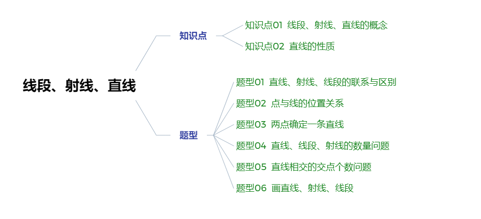

知识点01 线段、射线、直线的概念
1.线段的表示也有两种：一个小写字母或用端点的两个大写字母.但前面必须加“线段”两字，如：线段a；线段AB.
2.射线的表示同样有两种：一个小写字母或端点的大写字母和射线上的要给大写字母，前面必须加“射线”两字
3.直线的表示有两种：一个小写字母或两个大写字母.但前面必须加“直线”两字，如：直线 ；直线m，直线AB；直线CD
；直线m，直线AB；直线CD
基本概念：
名称 | 直线 | 射线 | 线段 |
图形 | 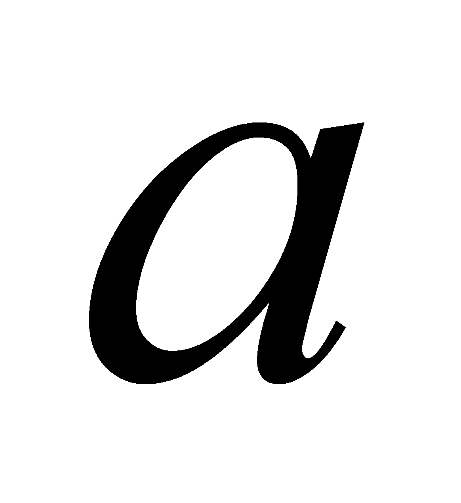 | ||
端点个数 | 无 | 一个 | 两个 |
表示法 | 直线 直线AB（BA） | 射线 射线AB | 线段 线段AB（BA） |
作法叙述 | 作直线 作直线AB | 作射线 作射线AB | 作线段 作线段AB 连接AB |
延长 | 向两端无限延长 | 向一端无限延长 | 不可延长 |
【即学即练1】
1．（23-24六年级下·全国·假期作业）如图，表示方法正确的是（ ）

A．①② B．②④ C．③④ D．①④
2．（23-24六年级下·山东烟台·期中）在日常生活中，手电筒发射出来的光线，类似于 ．（填“折线”或“线段”或“射线”或“直线”）
3．（23-24六年级下·全国·假期作业）根据如图所示的图形填空：

(1)点B在直线 _________，点C在直线_________；
_________，点C在直线_________；
(2)点E是直线与_________直线_________的交点，直线 与直线
与直线 相交于点_________；
相交于点_________；
(3)过点A的直线有_________条，分别是__________________．
知识点02 直线的性质
经过两点有一条直线，并且只有一条直线.简单地：两点确定一条直线. 两条直线相交，只有一个交点.
【即学即练2】
1．（23-24七年级上·贵州贵阳·期末）墨斗被认为是“百作手艺祖师爷”鲁班的发明，是木匠用来弹、放各种线记的重要工具，以其“绳之以墨”的功能成为了文人墨客心中正直的化身．如图，经过刨平的木板上的两个点，能弹出一条笔直的墨线，而且只能弹出一条墨线，能解释这一实际应用的数学知识是 ．
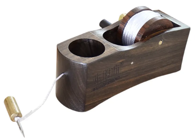

题型01 直线、射线、线段的联系与区别
【典例1】（2024·河北邢台·三模）下列图形中，可以表示为“线段 ”的是（ ）
”的是（ ）
A．
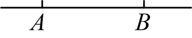
B．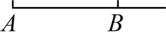
C．
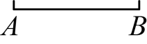
D．
【变式1】（23-24六年级下·全国·假期作业）图中直线的表示方法，不正确的有（ ）
A．1个 B．2个 C．3个 D．4个
【变式2】（23-24七年级上·河南平顶山·期末）如图，对于图中直线的描述，正确的是（ ）
A．图中有直线 B．图中有直线
B．图中有直线
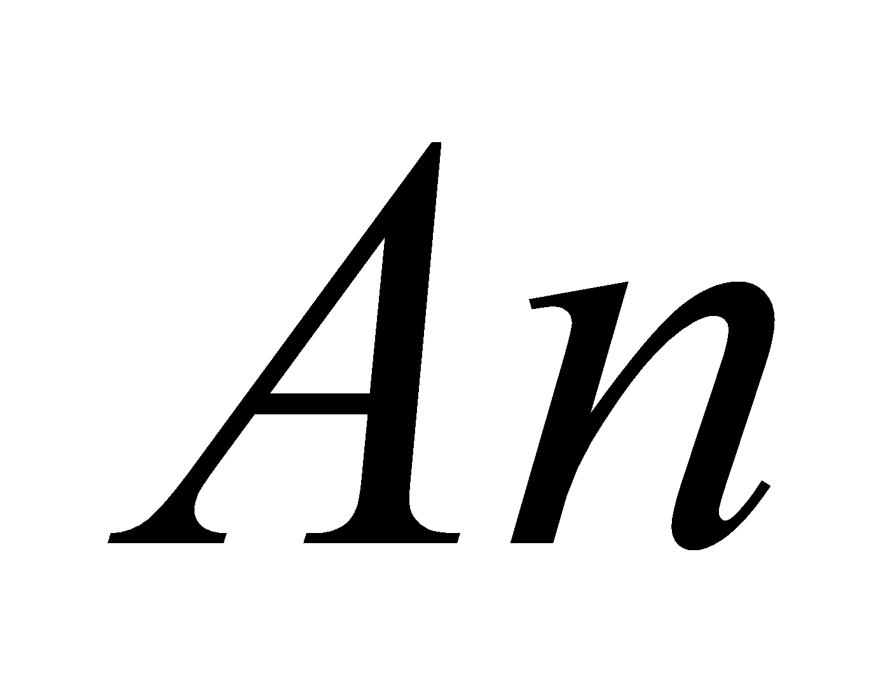
C．直线
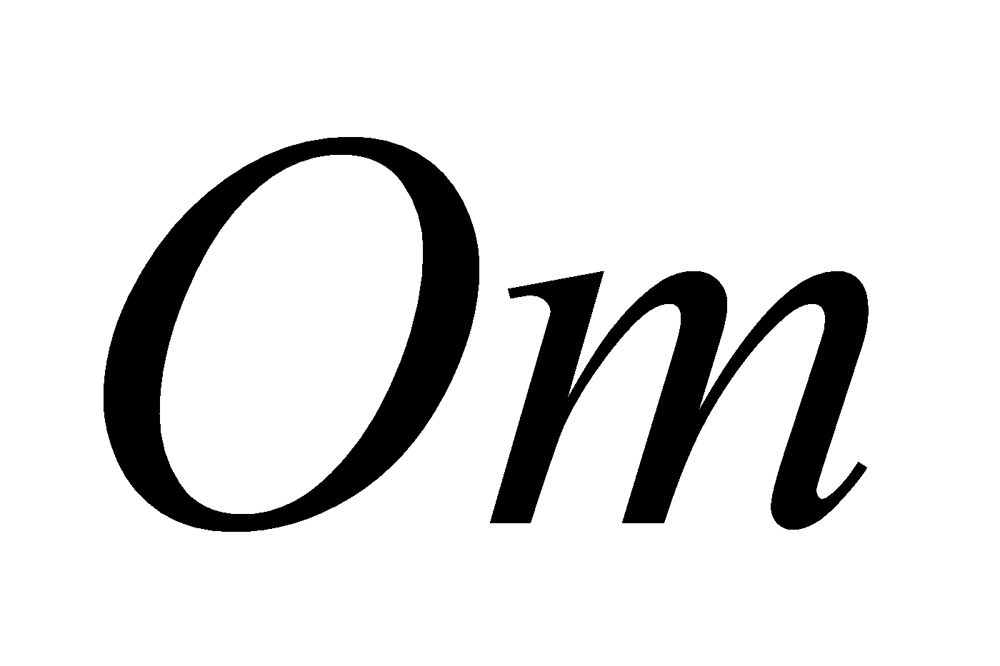
与直线 交于点O D．直线
交于点O D．直线 与直线m交于点O
与直线m交于点O【变式3】（23-24七年级上·全国·单元测试）小明根据下列语句，分别画出了图形 ，并将图形的标号填在了相应的“语句”后面的横线上．其中正确的是（ ）
，并将图形的标号填在了相应的“语句”后面的横线上．其中正确的是（ ）
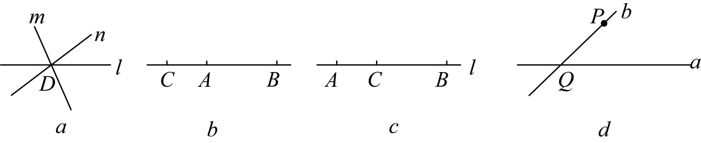
①直线 经过点
经过点 三点，并且点
三点，并且点 在点
在点 与
与 之间；
之间；
②点在线段的反向延长线上；
③点 是直线
是直线 外一点，过点的直线与直线相交于点
外一点，过点的直线与直线相交于点 ；
；
④直线 相交于点
相交于点 ．
．
A．①②③④ B．①②④ C．①③④ D．②③
题型02 点与线的位置关系
【典例2】（23-24七年级上·河北唐山·期末）平面上有A，B，C三点，如果 ，
， ，
， ，那么下列说法正确的是（ ）
，那么下列说法正确的是（ ）
A．点C在线段上 B．点C在线段的延长线上
C．点C在直线外 D．点C的位置无法确定
【变式1】（23-24七年级上·吉林·期末）如图，直线m和直线n相交于点O，对于图形，说法正确的语句有（ ）

①点O在直线m上．
②点O在直线n上．
③点O在直线m上． 也在直线n上．
④直线m经过点O．
A．1个． B．2个． C．3个． D．4个．
【变式2】（23-24七年级上·河北石家庄·阶段练习）下列几何图形与相应语言描述不相符的是（ ）
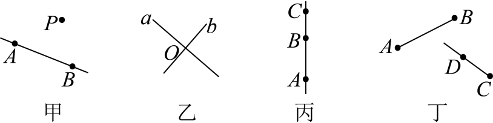
A．如图甲所示，直线不经过点P
B．如图乙所示，直线a与直线b交于点O
C．如图丙所示，点C在线段上
D．如图丁所示，线段与射线 一定相交
一定相交
【变式3】（2023七年级上·江苏·专题练习）如图，用适当的语句表述图中点与直线的关系，错误的是（ ）

A．点P在直线外 B．点C在直线外
C．直线 不经过点M D．直线经过点B
不经过点M D．直线经过点B
题型03 两点确定一条直线
【典例3】（23-24六年级下·山东东营·开学考试）要在墙壁上固定一根小木条，至少需要两枚钉子，其数学原理是 ．
【变式1】（23-24七年级上·河南新乡·期末）如图，木匠师傅经过刨平的木板上的A，B两点，可以弹出一条笔直的墨线，请你解释这一实际应用的数学基本事实是 ．

【变式2】（23-24六年级下·山东青岛·阶段练习）要种一列排列笔直的树，小明说：只要先定下两棵树的位置，然后其他树的位置就容易确定了，你认为小明这样说根据的数学原理是 ．
【变式3】（23-24七年级上·福建厦门·期末）暑假期间，小华参加了夏令营打靶瞄准训练，如图所示，打靶瞄准用到的数学原理是 ．
题型04 直线、线段、射线的数量问题
【典例4】（23-24七年级上·河南郑州·期末）如图，小金同学根据图形写出了三个结论：①图中共有6条线段；②图中共有1条直线；③图中射线 与射线
与射线 不是同一条射线．其中结论正确的是（ ）
不是同一条射线．其中结论正确的是（ ）
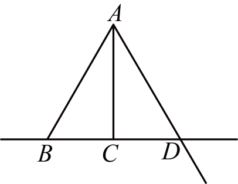
A．①② B．①③ C．②③ D．①②③
【变式1】（23-24七年级上·四川成都·开学考试）图中，共有 条线段．

【变式2】（24-25七年级上·全国·单元测试）图中线段有 条，射线有 条．

【变式3】（24-25七年级上·全国·课后作业）如图，网格纸中有七个黑点和六个白点，经过同色的三点可以画 条直线．
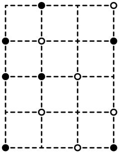
题型05 直线相交的交点个数问题
【典例5】（23-24七年级上·甘肃庆阳·期末）如图，两条直线相交，有1个交点，三条直线相交最多有3个交点，四条直线相交最多有6个交点，则七条直线相交最多有 个交点．

【变式1】（18-19七年级·吉林长春·期末）一平面内，3条直线两两相交，最多有3个交点；4条直线两两相交，最多有6个交点；5条直线两两相交，最多有10个交点；…；那么，10条直线两两相交，最多有 个交点．
【变式2】（2024七年级·全国·竞赛）某市2013年计划投资160亿同时建设9条地铁轨道线，假设要在每个轨道线交叉口建一个报刊亭，且任意两条轨道线至多交叉一次，那么这样的报刊亭最多可建 个．
【变式3】（2024·湖北孝感·一模）小明学习相交直线时发现：3条直线两两相交最多有3个交点，4条直线两两相交最多有6个交点，按照这样的规律，
（1）5条直线两两相交最多有 个交点；
（2）n条直线两两相交最多有 个交点．（用含有字母n的式子表示， ）
）
题型06 画直线、射线、线段
【典例6】（23-24七年级上·新疆喀什·期末）如图，在平面上有A，B，C，D四点，请按照下列语句画出图形．

(1)画直线；
(2)画射线 ；
；
(3)连接B，C；
(4)线段和线段相交于点O．
【变式1】（23-24七年级上·吉林延边·期末）已知A，B，C，D四点（如图）：
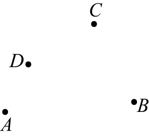
(1)画线段，射线 ，直线；
，直线；
(2)连，与直线交于点 ；
；
(3)连接 ，并延长线段与射线交于点
，并延长线段与射线交于点 ；
；
(4)连接，并延长线段与线段的反向延长线交于点 ．
．
【变式2】（22-23七年级上·河南郑州·阶段练习）如图，已知四点A，B，C，D，按下列要求作图：

(1)连接 ，BD交于点O；
，BD交于点O；
(2)作射线AB，射线CD；
(3)反向延长射线CD交射线AB于点P；
(4)图中有几条线段？几条射线？几条直线？
【变式3】（22-23七年级上·云南昆明·期末）如图所示，平面上有五个点A、B、C、D、E．按下列要求画出图形．

(1)连接；
(2)画直线交于点M；
(3)画射线；
(4)请在直线上确定一点N，使B、E两点到点N的距离之和最小，并说明理由（保留作图痕迹）．

一、单选题
1．（2024·河北石家庄·模拟预测）下列各图中，表示“射线 ”的是（ ）
”的是（ ）
A． B．
B．
C． D．
D．
2．（24-25七年级上·全国·课后作业）挂条幅时，要钉两个钉子才能牢固，其中的数学道理是（ ）．
A．两点之间线段最短 B．两点确定一条直线
C．两点能够确定多条直线 D．点动成线
3．（22-23六年级下·山东泰安·期中）如图，下列说法正确的是（ ）

A．直线 和直线
和直线 不是同一条直线
不是同一条直线
B．点 是直线的一个端点
是直线的一个端点
C．射线 和射线不是同一条射线
和射线不是同一条射线
D．点 在线段上
在线段上
4．（23-24七年级上·山东聊城·阶段练习）下列说法错误的是（ ）
A． 直线l经过点A B． 点C在线段上
点C在线段上
C． 射线
射线 与线段有公共点 D．
与线段有公共点 D． 直线a，b相交于点A
直线a，b相交于点A
5．（23-24七年级上·山东德州·期末）如图，有一种电子游戏，电子屏幕上有一条直线，在直线上有A，B，C，D四点．点P沿直线l从右向左移动，当出现点P与A，B，C，D四点中的至少两个点距离相等时，就会发出警报，则直线l上会发出警报的点P最多有（ ）个．

A．3 B．4 C．5 D．6
二、填空题
6．（23-24七年级上·福建福州·期末）如图，建筑工人砌墙时，经常先在两端立桩拉线，然后沿着线砌墙，读用所学的数学知识解释它这样操作的原因是

7．（24-25七年级上·全国·课后作业）如图， 是直线l上的三个点．
是直线l上的三个点．

（1）图中共有 条线段；
（2）图中以点B为端点的射线有 条，分别是 ；
（3）直线l还可以表示为 ．
8．（22-23七年级上·河南开封·期末）直线 的位置关系如图所示，下列语句：①点在直线
的位置关系如图所示，下列语句：①点在直线 上；②直线经过点
上；②直线经过点 ；③直线
；③直线 交于点
交于点 ；④点在直线AB外；⑤直线两两相交．以上表述正确的有 ．（只填写序号）
；④点在直线AB外；⑤直线两两相交．以上表述正确的有 ．（只填写序号）
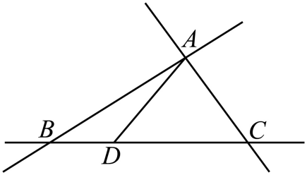
9．（22-23七年级上·甘肃酒泉·期末）素养提升：
如果平面上有
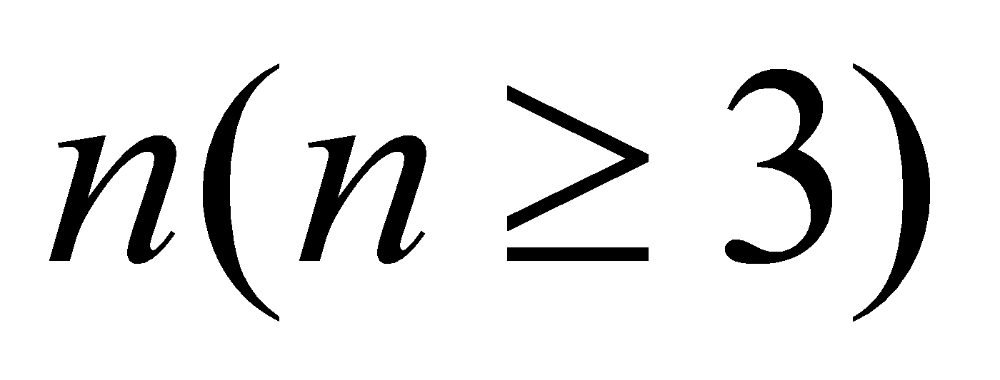
个点，且每3个点均不在1条直线上，那么最多画 条直线．能否通过以上发现，解决问题：某班45名同学在毕业的一次聚会中，若每两人握1次手问好，那么一共要握 次手．
10．（23-24七年级上·湖北武汉·阶段练习）已知2条直线相交，有1个交点，3条直线相交最多有3个交点，4条直线相交最多有6个交点，…，像这样，n条直线相交最多有 个交点．
三、解答题
11．（23-24七年级上·全国·课后作业）如图所示，共有多少条直线、射线、线段？请依次指出．
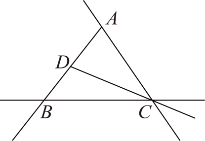
12．（22-23七年级上·江西上饶·期末）如图，平面内有四个点 ，根据下列语句画图．
，根据下列语句画图．
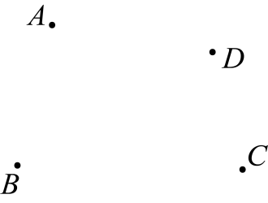
(1)画线段
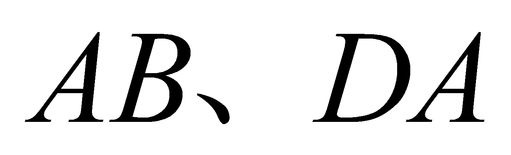
；(2)画直线 ；
；
(3)画射线 和
和 ．
．
13．（2024七年级下·云南·专题练习）如图，平面上有 四个点，请根据下列语句作图．
四个点，请根据下列语句作图．
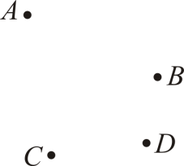
(1)画直线BD；
(2)画线段AD与线段 相交于点O；
相交于点O；
(3)画射线AB与射线CD相交于点P．
14．（23-24七年级上·福建泉州·期末）我们知道，两条直线相交最多有一个交点，三条直线相交最多有三个交点，四条直线相交最多有6个交点，…，如图所示．
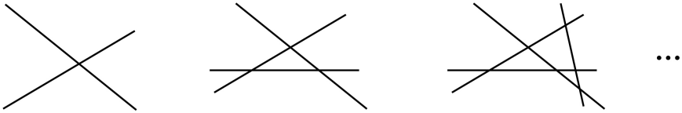
(1)五条直线相交最多有______个交点，六条直线相交最多有______个交点；
(2)若有 条直线相交，求最多交点的个数．（用含的代数式表示）
条直线相交，求最多交点的个数．（用含的代数式表示）
15．（23-24六年级下·山东济南·开学考试）若直线上有两个点，则以这两点为端点可以确定 一条线段.请仔细观察图形，解决下列问题：

试验观察：
（1）如图①所示，直线l上有3个点A，B， C，则可以确定 条线段.
（2）如图②所示，直线l上有4个点 A，B， C，D，则可以确定 条线段.
探索归纳：
（3）若直线上有n个点，一共可以确定多少条线段?
（4）如图③所示，由泰山始发终点至青岛的某次列车，运行途中停靠的车站依次是泰山、济南、淄博、潍坊、青岛，那么要为这次列车制作的单程火车票有（ ）
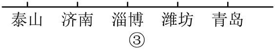
A．5 种 B．10 种 C．15 种 D．20 种